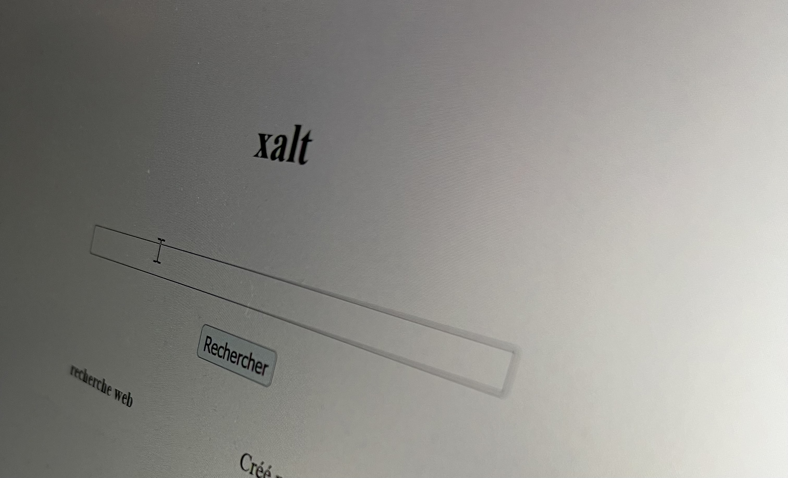

Comment j’ai fait mon moteur de recherche web ?
Parmi mes projets personnels les plus fous se trouve une idée un peu farfelue.
Il y a quelques année de cela, durant l’année 2016, je me suis passionné pour une dimension très spécifique de l’informatique, à savoir l’accès à l’information.
Je me suis alors intéressé au fonctionnement de moteurs de recherche dédiés aux web.
Alors si il existe plein de moteurs de recherche aujourd’hui, celui qui détient le monopole aux Etats-Unis et en Europe est bien évidemment Google. Egérie des Start-ups Garages et autres disrupteurs du dimanche, c’est aujourd’hui un portail rassemblant plus qu’un outil de recherche de page web, mais bien un assortiment de data-centers et de compétences permettant de dompter les flux de données à l’échelle mondiale.
Mais si nous revenons à la base du concept de moteur de recherche, c’est une tout autre idée bien que la vision reste la même.
Derrière un moteur de recherche tel qu’ils existaient dans la fin des années 90, il y a trois entités bien distinctes. Pour ce cas d’usage, je développerai le fonctionnement d’un moteur de recherche web très basique.
Le Crawler, l’explorateur du web
Tout d’abord, il y a le Crawler, aussi appelé Spider. C’est un logiciel qui se balade de page en page pour enregistrer l’ensemble des données associées. Il y lit le contenu, en déduit les mots clés associés, y recense l’ensemble des liens vers lesquels la page courante redirige.
Finalement, il fait exactement ce que son nom nous induit. On peut alors imaginer une petite araignée parcourant le web et traçant sa toile.
Chose important à noter: notre araignée robotisée, avant de pénétrer dans la page web, est tenu de lire un fichier robot.txt qui lui dit ou non si elle a le droit d’accéder ou d’enregistrer la page en question.
Une fois notre page web traitée, notre araignée poursuit son chemin en allant suivre les autres liens.
L’index
Chaque page visitée par notre araignée est inscrite dans une base de donnée appelée l’index, qui regroupe l’ensemble des données relative à la page web.
Les pages sont recensées dans l’index et sont couplées à leurs indice de pertinence: le pagerank.
Le Pagerank: classer l’information
Par la suite, c’est au pagerank de récupérer ces données brutes et de noter la page web en conséquence.
Il va d’abord enregistrer sa pertinence en comptant le nombre de lien qui redirigent vers cette page. Puis, il lui donner un score arbitraire en fonction de la pertinence des pages de ces liens sources.
Aujourd’hui, il existe des normes dédiées au SEO, à l’accessibilité et aux standards. Par exemple, si votre site est doté d’une bannière en flash avec des polices de caractères clignotantes tout en omettant d’être lisible sur un téléphone, c’est compliqué de se frayer un chemin vers la première page de résultats.
Le Pageranker va également associer ces pages aux mots clé les plus pertinents.
Un champs de recherche cache parfois autre chose
Enfin, il y a le front, qui est le site web ou l’application permettant d’interroger notre index.
En 2016, je rêvais déjà de construire un petit moteur dédié à la recherche web. Hélas, il me manquait à ce moment quelques notions qui m’ont empêcher de programmer l’outil de mes rêves.
A ce moment là, j’ai donc travaillé sur un méta-moteur de recherche !
Un méta-moteur de recherche, c’est un site ou une application qui (de base) n’a ni crawler, ni index. En effet, ce système se contente d’aller piocher chez la concurrence les résultats de recherche pour les ressortir sur une page avec un autre logo.
Du coup, à ce moment là, puisque je n’avais pas les compétences en programmation, j’ai décidé de travailler une autre partie tout aussi interessante: l’interface utilisateur.
Je me suis donc appliqué à repenser avec les moyens du bord.
L’idée derrière ce projet était alors d’imaginer une nouvelle forme d’expérience utilisateur axée sur l’idée de personnifier le logiciel.
Inspirée par les mascottes de Microsoft Word comme Clippy qui conseillait l’utilisateur sur son usage du traitement de texte, Toast était voué à servir de visage à l’éternelle page blanche ornée du champs de recherche qui fait la réputation de l’internet.
Au delà le l’interaction sommaire du personnage, le personnage serait également de champs de recherche qui s’affichage au gré des requêtes de l’utilisateur.
Mon objectif dans la réalisation de ce projet était de moderniser la manière dont l’utilisateur interagit avec son outil. Car c’était aussi l’époque ou les applications permettant d’échanger avec la machine avec leurs voix. Après tout, la voix de Siri permet de donner une dimension palpable à l’outil qu’on utilise. Et humaniser un logiciel permet à mon sens de capter une nouvelle audience en ajoutant une couche de simplification au dessus d’un outil déjà simplifié à l’extrême.
Avant cela, j’avais déjà travaillé sur une autre mouture de l’interface du moteur un peu plus proche de ce qui existait déjà.
Parcourir le web, un lien à la fois
Maintenant, parlons de mon projet qui remonte à deux ans (en 2020 donc). A cet instant, je m’intéresse beaucoup moins à l’interface utilisateur, mais bien à la technologie derrière les outils que j’utilise au quotidien.
J’ai le besoin de comprendre mieux comment faire tourner un vrai crawler.
Et pour cela, la première idée qui me vient à l’esprit est littéralement une boucle récursive: un moulin qui ne s’arrête jamais puisqu’il persiste à parcourir toutes les branches d’un arbre dont la hauteur n’est probablement pas un nombre raisonnable.
Du coup, j’ai commencé à la dure ! Une boucle récursive est initialisée par un appel de l’utilisateur au format ligne de commande. Par la suite, une partie du code (au format Objet) se connecte à notre base de donnée pour être rappelée autant de fois que nécéssaire en écriture.
La boucle va ajouter ou modifier les valeurs dans notre base de donnée correspondant à la page web et dont la clé est pour le moment le lien hypertexte de notre page.
Ce que j’en ai appris
Tout cela, en plus de me servir d’exercice, m’a permis d’entrevoir les limites des outils que j’utilisais alors, mais aussi les contraintes qui en découlent.
D’abord, le language JAVA est un langage séduisant et robuste, mais condamné à tourner sur une machine virtuelle appelée JVM. Cette dernière est une machine à gaz, opaque et dont on ne peut percevoir le fonctionnement de l’extérieur. En gros, c’est une boite noire et pas du tout optimisé pour mon idée, puisqu’à terme, je veux pouvoir faire des Threads de mes différents Crawlers pour faire tourner plusieurs araignées en parallèle. Ce qui fait que sur une machine donnée, je veux pouvoir avoir un maximum de threads qui tournent en parallèle, et qui soient orchestrés par un outil plus automatisable qu’un appel de commande.
Ensuite, il y a la base de données que j’utilisais: une base MySQL toute simple. Mais encore une fois, ce n’est pas ce que je veux pour manipuler de grandes quantités de données de manière plus souple, tout en imaginant un système de classification qui soit plus performant qu’un simple attribut. De plus, j’imagine que si une base MySQL est amplement suffisante pour faire tourner un site classique, ce n’est pas le meilleur outil pour l’application de mes rêves.
Du coup, je me pense me tourner à terme vers une solution en C plus plus. Mais j’hésite encore, et comme je vois de nouveaux langages apparaître régulièrement, je pense avoir l’opportunité de découvrir de nouvelles manières de construire le moteur de recherche de mes rêves !
Conclusion
J’essaie de découvrir de nouvelles technologies à apprivoiser très régulièrement, et mes projets personnels sont pour moi l’un des meilleurs moyens de rester à la page.
Je trouve néanmoins que l’évolution de mon petit projet personnel m’encourage à en apprendre plus !